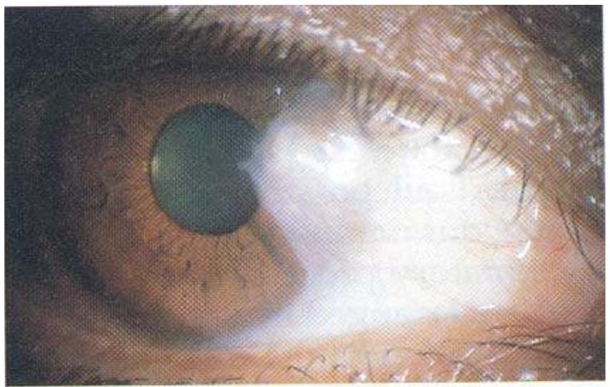
C.P.1.Pterygium
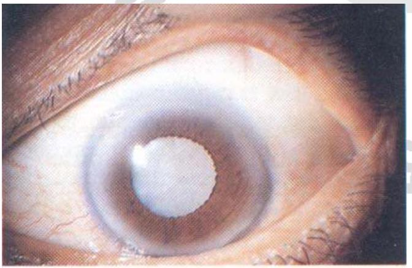
C.P.2.Corneal foreign body indicated by the arrow
C.P.3. Mature cataract
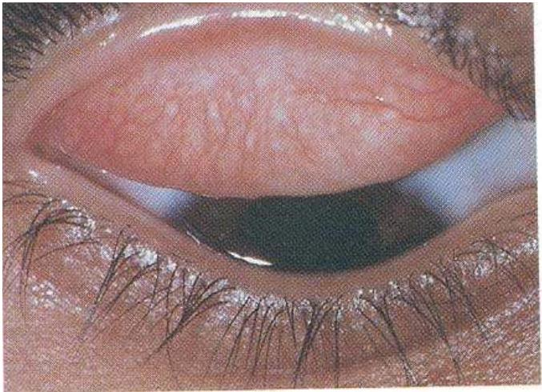
C.P.4.Mild trachoma with follicle and papilla
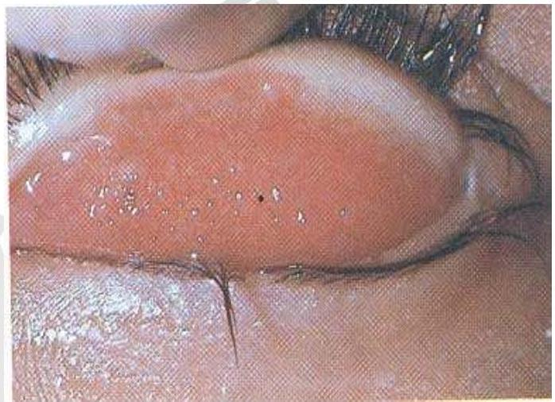
C.P.5. severe active trachoma with follicle and papilla
C.P.6.Moderate active trachoma with follicle and papilla
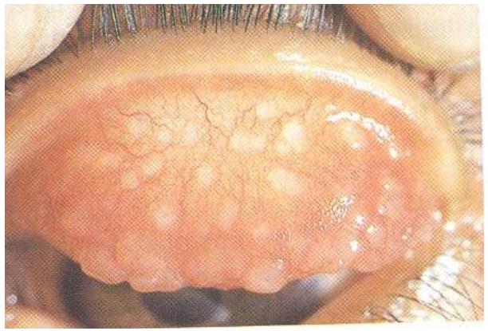
C.P.7.big papilla and follicles
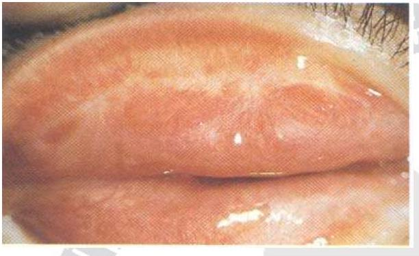
C.P.8. Conjunctival scar in the upper tarsal coniunctiva
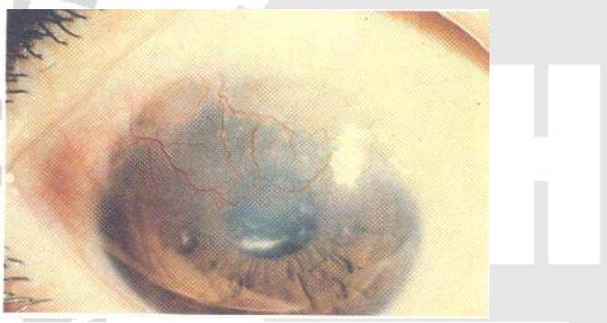
C.P.9. Corneal vascularization and scar
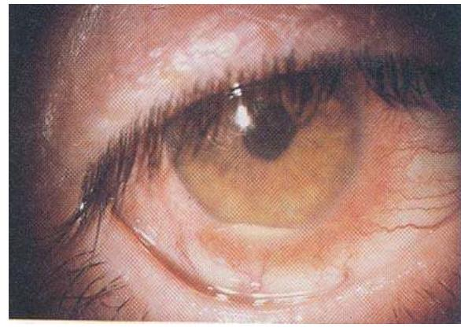
C.P.10. Acute iridocyclitis
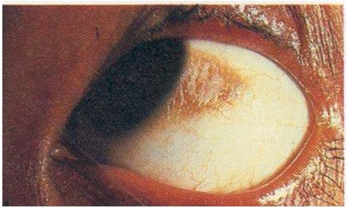
C.P.11.Bitot's spots with conjunctival xerosis
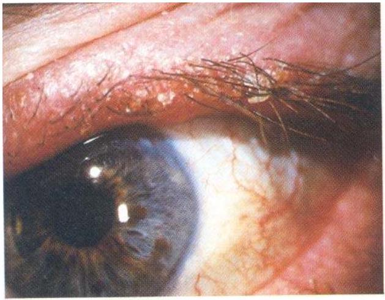
C.P.12. blepharitis
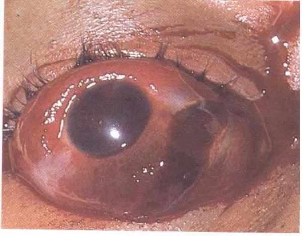
C.P.13. Penetrating eye injuries with scleral laceration
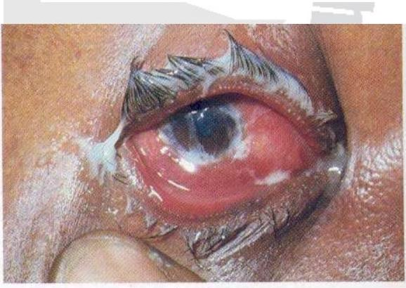
C.P. 14 .Bacterial conjunctivitis
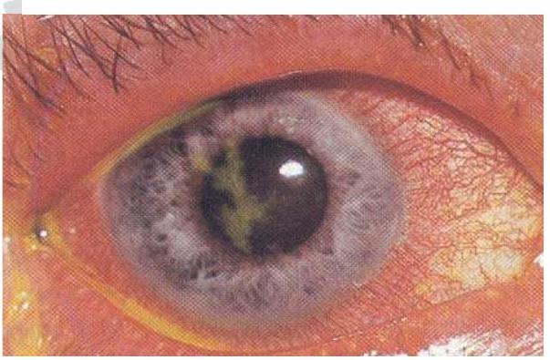
C.P.15. keratitis
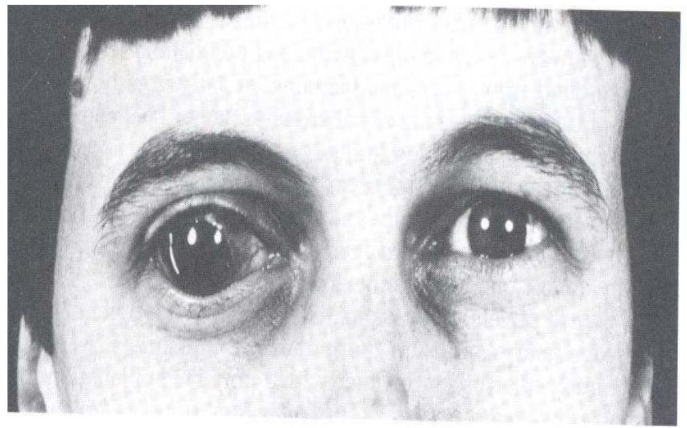
C.P. 16 congenital glaucoma
C.P. 17 left eye exotropia
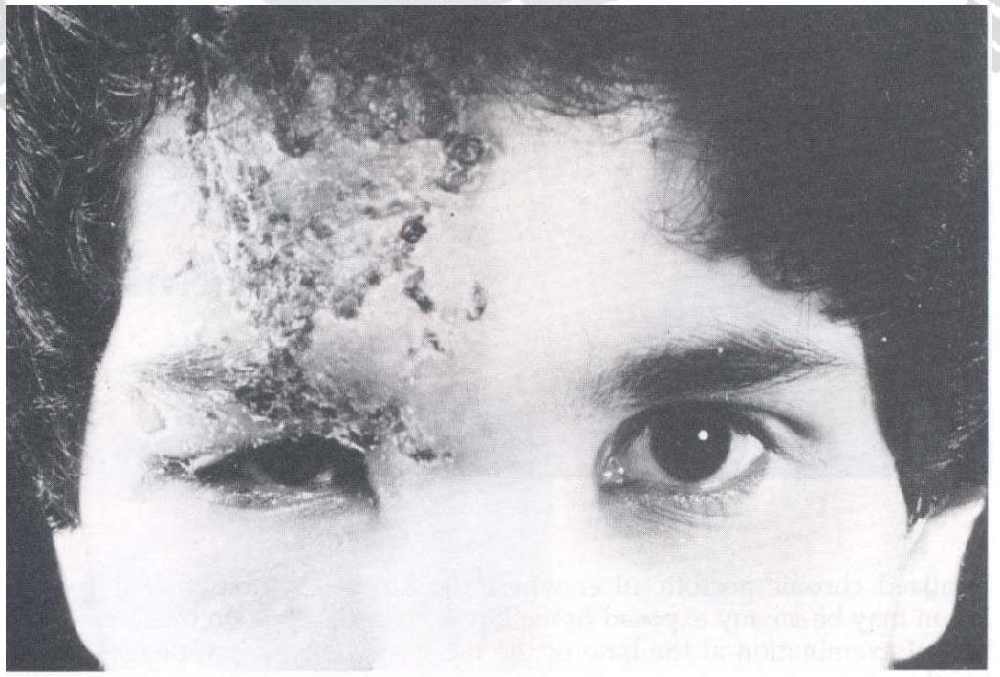
C.P.18. Ophthalmic Herpes zoster